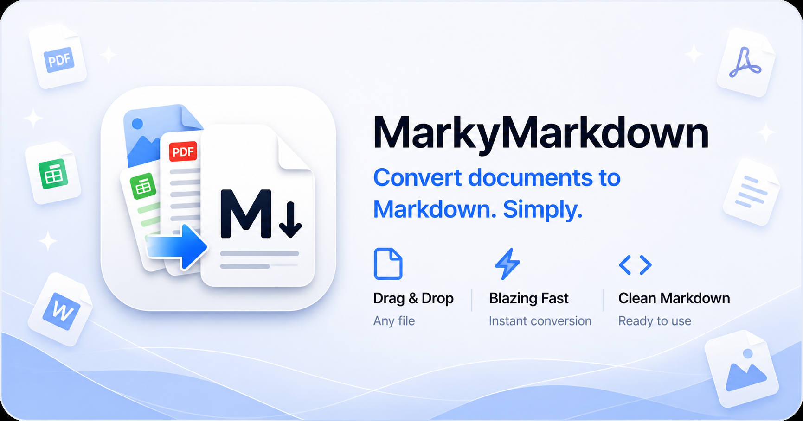

Drag any file onto the drop zone (or the menu bar icon) and conversion happens instantly.
Drop any supported file onto the MarkyMarkdown menu bar icon or the drop window.
The bundled MarkItDown engine runs 100% locally — no internet, no uploads, no waiting.
A .md file lands right next to your original. That's it.
Python runtime and all dependencies are bundled. Users install nothing extra — just drag the app into Applications.
Lives quietly in your menu bar. Drop files directly onto the icon without opening any window.
Every successful conversion gets a randomised cheerful message. Milestone achievements at 10, 50, and 100 conversions.
Converting the same file twice? MarkyMarkdown auto-appends (1), (2), … so you never overwrite existing output.
PDF, Word, PowerPoint, Excel, HTML, plain text, images — if MarkItDown can read it, MarkyMarkdown converts it.
Fully open source on GitHub. Inspect the code, contribute, or fork — no lock-in, no surprises.
Free, open source, and entirely on your Mac.
⬇️ Download MarkyMarkdownRequires macOS 13 Ventura or later · Apple Silicon